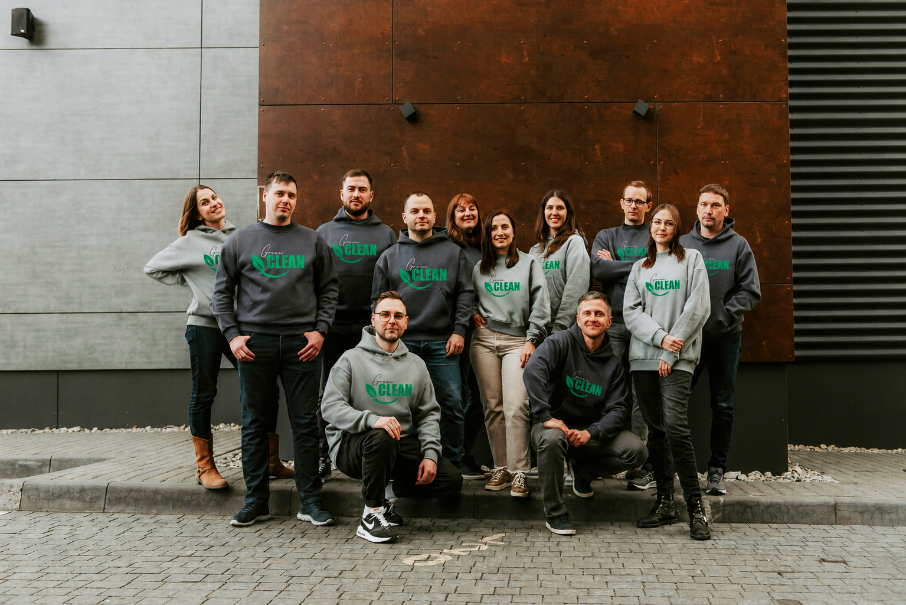

Green Clean är ett datadrivet initiativ
som utforskar hur återvinning och materialflöden fungerar i
praktiken, med målet att göra hållbarhetsdata mer begriplig och
tillgänglig.
Genom interaktiva visualiseringar och analyser av återvinning i
Sverige och Europa undersöker vi hur resurser används, återvinns och
förloras i dagens system.
Projektet fokuserar på att göra komplex miljödata mer överskådlig
och ge en tydligare bild av hur nära vi faktiskt är en mer cirkulär
ekonomi.